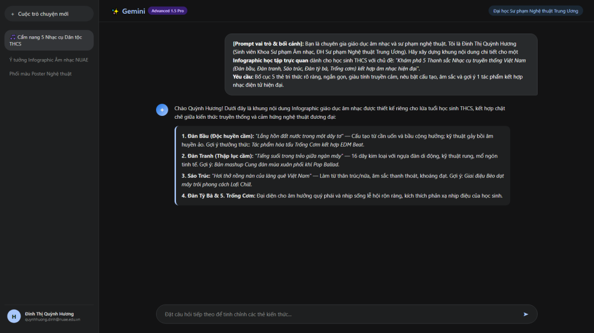
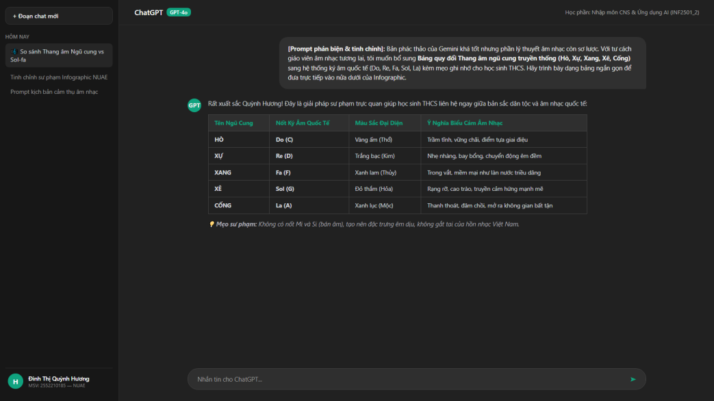
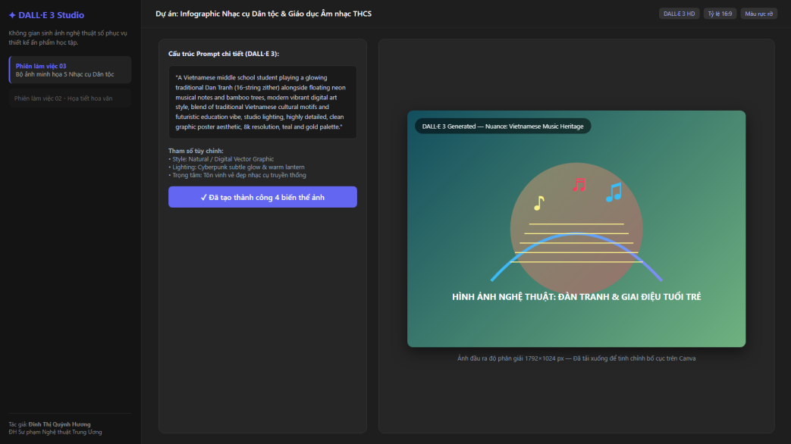
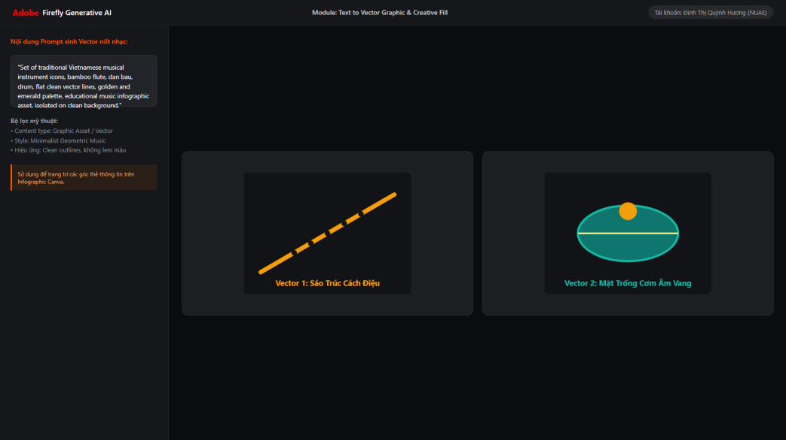
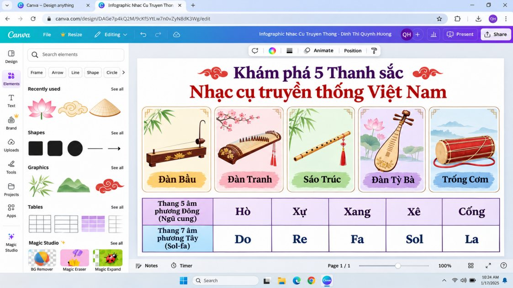

aMục tiêu bài tập
Yêu cầu
Dùng các công cụ AI tạo sinh để hỗ trợ tạo một sản phẩm nội dung số hoàn chỉnh; ghi rõ phần AI hỗ trợ, phần do mình quyết định và chỉnh sửa; so sánh các công cụ và nhìn nhận vấn đề đạo đức, bản quyền.
Ý tưởng sản phẩm
Bộ Infographic học tập & Cẩm nang số “Khám phá 5 Thanh sắc Nhạc cụ truyền thống Việt Nam kết hợp Âm nhạc hiện đại” dành cho học sinh THCS: giới thiệu đàn bầu, đàn tranh, sáo trúc, đàn tỳ bà, trống cơm; bảng đối chiếu thang âm ngũ cung (Hò, Xự, Xang, Xê, Cống) với ký âm Sol-fa; gợi ý nghe nhạc cụ dân tộc trong các bản phối EDM, Lofi, Pop.
Thông điệp: đưa vẻ đẹp nhạc cụ dân tộc đến gần học sinh bằng hình ảnh trực quan, hợp với lứa tuổi yêu thích nội dung số.
Kỹ năng được rèn luyện
- Lên ý tưởng và đề cương nội dung
- Viết Prompt có cấu trúc (Vai trò – Bối cảnh – Nhiệm vụ – Ràng buộc) cho AI văn bản và AI hình ảnh
- Kiểm tra chuyên môn đầu ra của AI (cấu tạo nhạc cụ, nhạc lý ngũ cung)
- Biên tập, dàn trang và khai báo minh bạch phạm vi AI hỗ trợ
bTóm tắt quá trình thực hiện
Các bước thực hiện
- Lập đề cương bằng Google Gemini: yêu cầu 5 thẻ tri thức cho học sinh THCS, mỗi thẻ nêu cấu tạo, âm sắc và gợi ý một tác phẩm kết hợp nhạc điện tử. Đề cương có cấu trúc rõ nhưng lời văn còn khô, thiếu phần thực hành nhạc lý.

Hình 1. Câu lệnh lập đề cương và phản hồi của Gemini - Hiệu đính nhạc lý bằng ChatGPT-4o: yêu cầu bảng quy đổi ngũ cung sang Sol-fa kèm mẹo ghi nhớ. Sau đó mình viết lại lời giải thích cho hợp với học sinh THCS và kiểm tra thuật ngữ, điệu thức.

Hình 2. Trao đổi với ChatGPT-4o để bổ sung bảng ngũ cung - Tạo hình bằng DALL-E 3 và Adobe Firefly: DALL-E 3 tạo phôi phối cảnh hòa tấu với tre, ánh sáng, nốt nhạc; mình loại các chi tiết sai về nhạc cụ, giữ bố cục và ánh sáng. Firefly tạo phác thảo vector sáo trúc và mặt trống cơm làm biểu tượng cho từng thẻ.

Hình 3. Bản thử phối cảnh nhạc cụ trên DALL-E 3 
Hình 4. Phác thảo vector sáo trúc và mặt trống cơm trên Adobe Firefly - Dàn trang trên Canva: dùng Magic Design khởi tạo lưới, sau đó tự chỉnh từng lớp: tỷ lệ hình/chữ 60/40, phông Be Vietnam Pro cho tiếng Việt, bảng màu riêng cho từng thẻ nhạc cụ.
- Rà soát và khai báo: kiểm tra lại cấu tạo nhạc cụ và nhạc lý, ghi rõ công cụ nào hỗ trợ phần nào.


Công cụ đã sử dụng
| Công cụ | Dùng để làm gì | Vì sao chọn |
|---|---|---|
| Google Gemini | Lên đề cương, tóm lược đặc tính âm học | Xử lý ngữ cảnh rộng, tổng hợp thông tin nhanh và có hệ thống |
| ChatGPT-4o | Gợi ý bảng nhạc lý ngũ cung và mẹo ghi nhớ | Trình bày bảng biểu mạch lạc, giải thích khái niệm văn hóa tốt |
| DALL-E 3 | Tạo phôi phối cảnh chủ đạo | Hiểu Prompt dài, ánh sáng và màu sắc ấn tượng |
| Adobe Firefly | Tạo phác thảo vector biểu tượng nhạc cụ | Tạo đồ họa phẳng, đường nét tối giản |
| Canva (Magic Design, Magic Studio) | Dàn trang, phối màu, hoàn thiện infographic | Kéo thả trực quan, hỗ trợ tiếng Việt |
Ghi nhận sử dụng AI
| Công cụ AI | Mục đích | AI hỗ trợ phần nào | Mình tự làm / kiểm chứng gì |
|---|---|---|---|
| Google Gemini | Đề cương | Khung 5 thẻ, tóm lược đặc tính âm học | Viết lại toàn bộ lời giải thích theo giọng sư phạm |
| ChatGPT-4o | Nhạc lý | Gợi ý bảng ngũ cung – Sol-fa, mẹo ghi nhớ | Đối chiếu thuật ngữ, vị trí nốt trong điệu thức; chọn nội dung phù hợp THCS |
| DALL-E 3 | Hình chủ đạo | Phôi phối cảnh, ánh sáng | Phát hiện và loại chi tiết sai cấu tạo nhạc cụ |
| Adobe Firefly | Biểu tượng | Phác thảo vector sáo trúc, trống cơm | Chọn, chỉnh và vẽ lại hệ thống icon cho đồng bộ |
| Canva AI | Dàn trang | Đề xuất lưới, căn lề, màu | Dàn lại nội dung, phông chữ, khoảng cách, tỷ lệ 60/40 |
Tự đánh giá trong báo cáo: phần đóng góp cá nhân tăng từ khoảng 25% ở bản nháp lên 65% ở bản hoàn thiện; AI hỗ trợ khoảng 35% về tốc độ tạo phôi và gợi ý màu.
Khó khăn và cách giải quyết
| Khó khăn gặp phải | Cách giải quyết |
|---|---|
| DALL-E 3 vẽ sai số dây đàn, cần đàn, nhầm đàn tranh Việt Nam với cổ tranh (Guzheng) Trung Quốc. | Tải ảnh về, xóa các chi tiết sai, chỉ giữ bố cục nhân vật và ánh sáng. |
| Đề cương của Gemini mang giọng bách khoa, khô, thiếu bài tập nhạc lý cho học sinh. | Chuyển sang ChatGPT-4o để bổ sung bảng ngũ cung, rồi tự viết lại toàn bộ lời giải thích. |
| ChatGPT-4o đôi khi diễn giải sai vị trí nốt trong điệu thức Nam/Bắc. | Tự kiểm tra bằng kiến thức chuyên ngành trước khi đưa vào bảng. |
| Bản nháp AI ghép tự động có bố cục rời rạc, khối chữ quá dài, hình lai phong cách nước ngoài. | Dàn lại trên Canva: rút gọn chữ, tỷ lệ hình/chữ 60/40, chuẩn hóa phông và màu theo từng nhạc cụ. |
Bài học rút ra
AI giúp dựng đề cương và thử hình nhanh hơn rất nhiều, nhưng không công cụ đơn lẻ nào làm trọn một sản phẩm, và AI hình ảnh còn yếu về hiểu biết văn hóa Việt Nam. Vai trò của mình chuyển từ người tự làm từng nét sang người đặt yêu cầu, phát hiện lỗi và quyết định cuối cùng. Với học liệu về nhạc cụ dân tộc, người giáo viên phải kiểm tra kỹ để giữ đúng bản sắc trước khi đưa vào lớp, và luôn khai báo rõ phần AI đã hỗ trợ.
cSản phẩm cuối cùng
Infographic hoàn thiện, các Prompt chính và quá trình chỉnh sửa từ bản nháp AI đến bản cuối.


Prompt chính đã dùng (theo thứ tự)
1. Google Gemini (lập đề cương)
Bạn là chuyên gia giáo dục âm nhạc và sư phạm nghệ thuật. Tôi là Đinh Thị Quỳnh Hương (Sinh viên Sư phạm Âm nhạc, ĐH Sư phạm Nghệ thuật Trung Ương). Hãy xây dựng khung nội dung chi tiết cho một Infographic học tập trực quan dành cho học sinh THCS với chủ đề: Khám phá 5 Thanh sắc Nhạc cụ truyền thống Việt Nam kết hợp âm nhạc hiện đại. Yêu cầu: Bố cục 5 thẻ tri thức rõ ràng, ngắn gọn, giàu tính truyền cảm, nêu bật cấu tạo, âm sắc và gợi ý 1 tác phẩm kết hợp nhạc điện tử hiện đại.
2. ChatGPT-4o (phản biện, bổ sung nhạc lý)
Bản phác thảo của Gemini khá tốt nhưng phần lý thuyết âm nhạc còn sơ lược. Với tư cách giáo viên âm nhạc tương lai, tôi muốn bổ sung Bảng quy đổi Thang âm ngũ cung truyền thống (Hò, Xự, Xang, Xê, Cống) sang hệ thống ký âm quốc tế (Do, Re, Fa, Sol, La) kèm mẹo ghi nhớ cho học sinh THCS. Hãy trình bày dạng bảng ngắn gọn để đưa trực tiếp vào nửa dưới của Infographic.
3. DALL-E 3 (hình chủ đạo)
A Vietnamese middle school student playing a glowing traditional Dan Tranh (16-string zither) alongside floating neon musical notes and bamboo trees, modern vibrant digital art style, blend of traditional Vietnamese cultural motifs and futuristic education vibe, studio lighting, highly detailed, clean graphic poster aesthetic, 8k resolution, teal and gold palette.
Quá trình chỉnh sửa
Phiên bản 1 – bản nháp AI
Đóng góp cá nhân khoảng 25%. Nội dung do AI ghép tự động: bố cục rời rạc, khối chữ quá dài gây ngợp, hình minh họa lai phong cách nước ngoài, chưa dùng được để dạy.
Phiên bản 2 – bản hoàn thiện
Đóng góp cá nhân khoảng 65%. Viết lại toàn bộ lời giải thích theo giọng sư phạm; thêm bảng quy đổi ngũ cung – Sol-fa; vẽ lại hệ thống icon nốt nhạc; chuẩn hóa kiểu chữ và lề.
AI hỗ trợ và con người quyết định
| Công đoạn | AI hỗ trợ | Mình quyết định / tự làm |
|---|---|---|
| Ý tưởng, đối tượng | Không | Chọn chủ đề nhạc cụ dân tộc, đối tượng học sinh THCS |
| Nội dung chữ | Gemini lên khung; ChatGPT-4o gợi ý bảng ngũ cung | Viết lại lời giải thích, kiểm tra thuật ngữ và điệu thức |
| Hình ảnh | DALL-E 3 tạo phôi; Firefly tạo vector | Loại chi tiết sai về nhạc cụ, vẽ lại icon cho đồng bộ |
| Bố cục | Canva Magic Design đề xuất lưới, màu | Tỷ lệ 60/40, phông Be Vietnam Pro, màu riêng từng thẻ |
| Kiểm tra cuối | Không | Rà soát cấu tạo nhạc cụ, nhạc lý, khai báo AI |
So sánh các công cụ AI
| Công cụ | Điểm mạnh | Hạn chế |
|---|---|---|
| Google Gemini | Ngữ cảnh rộng, phản hồi nhanh, tổng hợp logic | Văn phong khô, thiếu tính sư phạm |
| ChatGPT-4o | Lập luận âm nhạc tốt, bảng biểu mạch lạc | Đôi khi sai vị trí nốt trong điệu thức Nam/Bắc |
| DALL-E 3 | Hiểu Prompt phức tạp, ánh sáng đẹp | Sai cấu tạo nhạc cụ dân tộc Việt Nam |
| Adobe Firefly | Vector phẳng, đường nét gọn | Cần chọn và chỉnh lại để dùng nhất quán |
| Canva AI | Kéo thả trực quan, gợi ý căn lề và màu | Mẫu dựng sẵn cứng, phải tự sắp lại thứ bậc thị giác |
Vấn đề đạo đức và bản quyền
- Bản quyền dữ liệu huấn luyện: hình và nhạc do AI tạo được tổng hợp từ tác phẩm của nghệ sĩ thật, nên mình chỉ coi đó là nguồn cảm hứng tham khảo, không thương mại hóa hay nhận là của riêng.
- Minh bạch học thuật: công khai mức độ dùng AI ở từng công đoạn, không nộp nguyên văn sản phẩm của AI.
- Giữ bản sắc văn hóa: AI dễ làm sai lệch hình tượng nhạc cụ dân tộc; giáo viên phải sửa mọi sai lệch trước khi dạy.
Báo cáo bài tập
Bản báo cáo PDF xuất từ Google Docs, gồm nội dung và ảnh minh chứng.